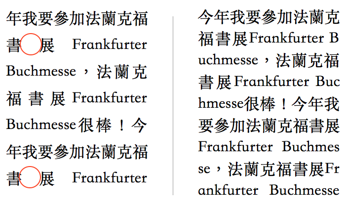

网页字体排印指南
排版者应像手艺人一样遵循一条原则：做好自己的工作并隐于无形
目录
关于
网页上百分之九十五的信息是「文字」，大多数人浏览网页的状态就是阅读，也就是你目前正在做的事情. 因此作为一名前端工程师，让文字更好地在网页显示，是一件极其重要的工作.
字体排印有两种形式，一种称为 Creative Typography，另一种称为 Technical Typography. 前者倾向于设计，比如选择的字体表达的情绪，字间距的设定带来的视觉影响. 而后者更倾向于技术，以一套有迹可循的规则进行应用，比如实现「齐头尾」如何避免中西文混排造成的字间距拉伸，以及选择什么样的 font-family 可以在多平台上最优显示等等.
本文主要围绕 Technical Typography 进行讨论.
选择字体
在 Web 上应用字体，是一门技术，同时也是一门艺术. 由于计算机历史发展的原因，西文有大量优秀的字体可供选择，可对于中文来说就是一项挑战. 主流操作系统提供的本地中文字体极少，另一方面中文字体组成的特殊性，其体积过于庞大，无法良好地使用 webfont. 所以编写健壮的 font-family 是一件需要深思熟虑的事情.
以下列出各种平台下合适的中西文字体：
| Mac | Windows | Linux |
|---|---|---|
| 冬青黑体 Hiragino Sans GB |
中易宋体 SimSun |
文泉驿微米黑 WenQuanYi Microhei |
| 黑体-简（华文黑体） Heiti SC (STHeiti) |
微软雅黑 Microsoft YaHei |
|
| 宋体-简（华文宋体） Songti SC (STSong) |
| iOS | Android |
|---|---|
| 黑体-简（华文黑体） Heiti SC (STHeiti) |
思源黑体 Noto Sans CJK SC |
| Droid Sans Fallback |
| 无衬线 | 衬线 | 等宽 |
|---|---|---|
| Lucida Grande | Georgia | Menlo |
| Helvetica Neue | Times New Roman | Courier |
| Arial |
抛开宋/明体长时间作为系统默认字体，所产生的审美疲劳，宋/明体相比黑体是更合适作为内文字体. 大多的宋/明体针对内文设计，横细直粗，造型方正，笔画在小字号的情况下，不会糊在一起，给人一种素雅的感觉. 而黑体笔画粗壮有力，引人注目，更适合作为标题使用.
但大部分人已经习惯在网页上阅读黑体，以及宋/明体在字重过大的情况下，显示效果还是不太理想. 所以内文默认提供黑体，可选择性的切换宋/明体.
按照以上表格提供的中文字体，为此我为内文和标题编写两套 font-family. 关于这两套 font-family 的选择和排序，等空闲时，再写一篇文章谈下.
p { font-family: "Georgia", "Times New Roman", "Songti SC", "SimSun", serif; }
h1, h2, h3, h4, h5, h6 { font-family: "Lucida Grande", "Helvetica Neue", "Arial", "Hiragino Sans GB", "Noto Sans CJK SC", "Heiti SC", "Microsoft YaHei", "WenQuanYi Microhei", sans-serif; }垂直的旋律
音阶
Robert Bringhurst 在《The Elements of Typographic Style》谈到字号大小之间的比例，形似于音乐中的音阶. 作曲时以某个特定的音阶为基础，才会形成特定的风格. 字号的排版同样如此，有规律的字号变化，才会形成特定的排版风格.
将内文以 16px 作为字号
标题 h1, h2, h3, h4, h5, h6 以 16px 作为字号基础，按同比例的递减
p { font-size: 16px; }
h1 { font-size: 2em; }
h2 { font-size: 1.8em; }
h3 { font-size: 1.6em; }
h4 { font-size: 1.4em; }
h5, h6 { font-size: 1.2em; }节拍
此外，Robert Bringhurst 还谈到版式中的空间就像音乐中的时间(Space in typography is like time in music)，言下之意，把握间距（行高）就如把握节拍. 节拍是对时间的分割，倘若抢拍便失去节奏. 文字的间距（行高）亦是对空间的分割，不一致间距（行高）比例，便会失去「垂直的旋律」.
将内文以 1.7em 作为行高
标题 h1, h2, h3, h4, h5, h6 以 1.5em 作为行高.
p { line-height: 1.7em; }
h1, h2, h3, h4, h5, h6 { line-height: 1.5em; }段首缩进 VS 段落间距
段落分隔对于中文排版而言也是特别重要，主要以「段首缩进」和「段落间距」两种方式表现，它们的唯一目的就是将段落分隔.
「段首缩进」主要用于印刷书籍，节省纵向空间，保持文本连贯，但一般在网页上的阅读速度较快，会使文字过于密集产生压力. 相反「段落间距」主要用于网页，充分利用网页无限的纵向空间，保障文本块的整洁，同时给予长篇阅读休息的间隙. 所以一般网页排版，会考虑选择「段落间距」，可以设置以下属性实现「段落间距」.
p { margin-bottom: 1.7em; }
h1, h2, h3, h4, h5, h6 {
margin-top: .7em;
margin-bottom: 0.2em;
}对齐
汉字的方块性质构成了汉字独有的艺术美感，使其具有工整的特点，从而显现出中文排版的重要原则：所有元素都是正方体. 但从二十世纪开始使用标点后，以及中西文混排的情况越来越多，为了保证「禁则处理」和「齐头尾」实现，可能需要在不同条件下进行适当的断词处理.
「禁則」是来自日语的排版术语，主要指的就是禁止一些标点等字符出现在行首或行尾的规则，大致相当于汉语常说的「避头尾」.
可以设置以下属性实现「齐头尾」，其中inter-ideographic意思是「通过调整单词和字符之间的留白来实现两端对齐」.
p {
text-align: justify;
text-justify: inter-ideographic;
}但这样的「齐头尾」并不是完美的，主要由于技术遗留原因，在 Windows 和 Linux 上的 webkit 浏览器并没有实现 inter-ideographic 导致中西文混排的时候，容易出现过度拉伸字间距的情况.
 左侧: inter-ideographic | 右侧: break-all
为此有一种不优雅的解决方案，在极易出现字间距拉伸的小尺寸屏幕（手机）上使用「断词处理」，避免字间距拉伸，可是这样也带来「无视避头尾规则」和「西文单词断词」的坏毛病. 这是用一种不优雅解决另一种不优雅，按需抉择吧.
可以设置以下属性进行「断词处理」
p { word-break: break-all; }未作说明...
- 单行字数
- 没有斜体
- 图片样式
- 引用文字
- Kerning
- 有序/无序列表
- 「.」作为句号相比「。」的优势
参见：
Technical Web Typography: Guidelines and Techniques
Web Design is 95% Typography
The Elements of Typographic Style
Best Practices for Chinese Layout
JUSTFONT BLOG
Google
维基百科
知乎
制作 | 树
音乐 | hynuza